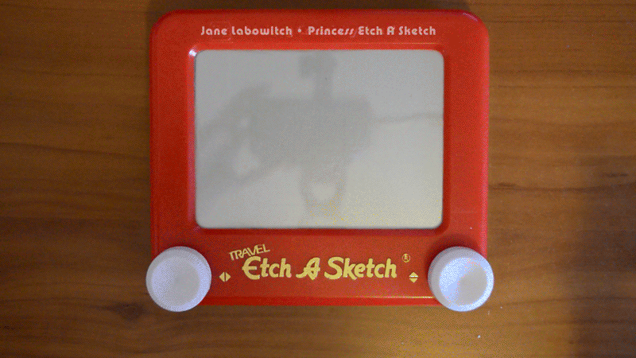
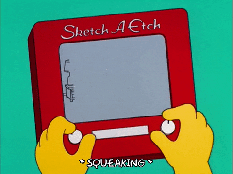
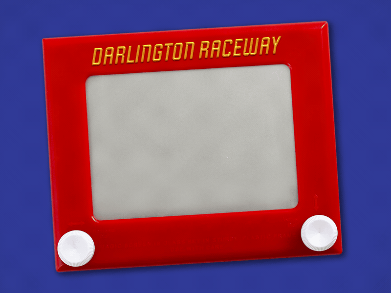

Step One: Hold and Prepare the Etch-A-Sketch

Hold the Etch-A-Sketch upright with the screen facing you. Position the two knobs at the bottom of the frame. Check that the screen is blank before beginning.

Hold the Etch-A-Sketch upright with the screen facing you. Position the two knobs at the bottom of the frame. Check that the screen is blank before beginning.

Turn the left knob clockwise to move the stylus to the right. Turn the left knob counterclockwise to move the stylus to the left. Turn the right knob clockwise to move the stylus upward. Turn the right knob counterclockwise to move the stylus downward.

Shake the Etch-A-Sketch gently to erase the drawing. Continue shaking until the screen is fully cleared. Hold the device upright again before starting a new drawing.